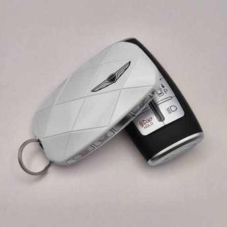
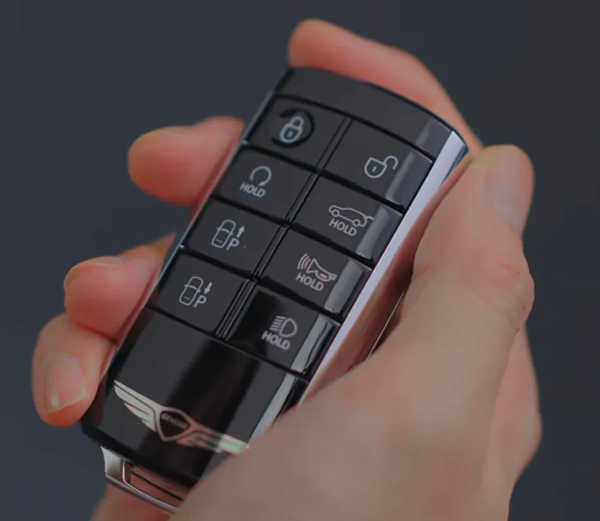
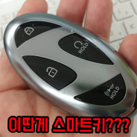

쓰기는 졸라 편한데 디자인을 포기해야하네
조약돌보다 나은가...?
갑자기 삼엽충됐네
이정도면 현대 키 디자인팀은 폐급들만 모아논 짬통부서가 틀림없다

공돌이들만 있어서그런가 디자인이 참 ..
제키
마초스럽고 괜춘한데 솔직히 위에꺼는 버튼이 너무 작아서 불편함
에반데
직관적이긴한데 디자인 진짜 30년 전 차키 수준이네
어르신 차라...
30년전엔 스마트키는 커녕 리모컨키도 잘 안썼어..
와...퇴보
노땅 새끼들만 구매 하니까 키까지 노땅이네 ㅋㅋㅋ
근데 아래가 편의성 고트로 보이긴하는데 비싼 옵션 달면 뽀대나는걸로 줘서 급나눔 해라
구형 전자키 중고가 상승중 ㅋㅋㅋㅋㅋㅋㅋ
기존꺼 이쁘고 편하고 좋은데
AI라도 좀 써라
날개 엠블럼이 좀 짜쳐..
진짜 재능있네 못 만드는거에
ㅋㅋㅋㅋㅋ 현대차 스마트키 보다가 저거 보니 존아 간지난다
구매수요층 타겟으로만들엇겟지 여기잇는사람들 99프로가 저거살일이없는데 ㅋ
조약돌키 쓰는데 제네시스 구형키 사서 현대차가서 키 페어링 시키면 사용가능?
찾아보시면 차키 개조해주는업체가있긴합니다 센터에서는 안받아주고요 기판이식도해야되고해서 비용이 10만원가까이할겁니다 난이도에따라 더 비쌀지도?
그냥 디지털키 쓰겠습니다.......
벤틀리디자이너들 다 퇴사했냐? 디자인때문에 팔리던차를 개씹창내버리네ㅋㅋ
갑자기 왜 복근이 생겼냐
ㅋㅋㅋㅋㅋㅋㅋㅋㅋㅋㅋㅋㅋㅋㅋㅋ
?? 아래로 바꼈다고?
그럼 뒷면이 궁금한디
진짜 옛~~~~~날 리모컨인데
형태는 기능을 따른다… 처음부터 그 생각뿐이었다!
조약돌에비하면 선녀아니냐저건ㅋㅋㅋㅋㅋㅋㅋㅋㅋㅋㅋㅋㅋㅋㅋㅋㅋㅋㅋ
진짜 현대는 차키 감성이 좆도 없는듯 ㅋㅋ
갑자기 졸라 구려졌네 뭐임
덮개라도 만들어주지... ㅋㅋㅋㅋㅋ
일본 테레비 리모컨처럼 생걌네 ㅋㅋㅋ
정 못하겠음 짱꺠회사들꺼 좀 배껴라 씨발 쟤들은 키 디자인들이 저게뭐냐
조약돌보다가 보니까 뭘 봐도 선녀같네
더 병신으르 만드냐
ㅈㄴ 크네 실제로 들고 다니냐?
디자인때문에 기능 포기하거나 쓰기 어렵게 만들바엔 저게 나은거 같은데
나만 바뀐게 훨 나아보이냐
잘바꿨다 gv70 탈때 키 짜증났었는데 다음에 gv70 하브나오면 바꿔야징
타는사람 연령대가 있다보니 직관적으로 바꾼듯
전트림 디지털키 지원해서
키 디자인이 상관있나 싶음
왜 퇴보를